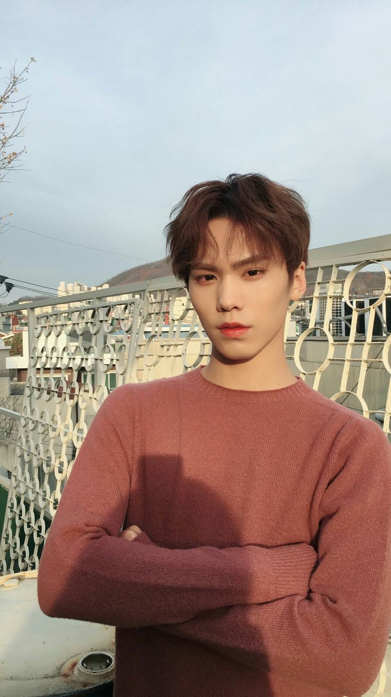

Park Minhyuk |
|
|
Stage name Position Birthday Zodiac Sign Birthplace Height Weight Blood type Specialties |
Rocky Lead rapper, Main dancer, vocalist February 25 ,1999 Pisces Jinju, South Gyeongsang Province, South Korea 176 cm 63 kg O Cooking, Dancing, Taekwando, Choreographer |
FUN FACTS!
|
|